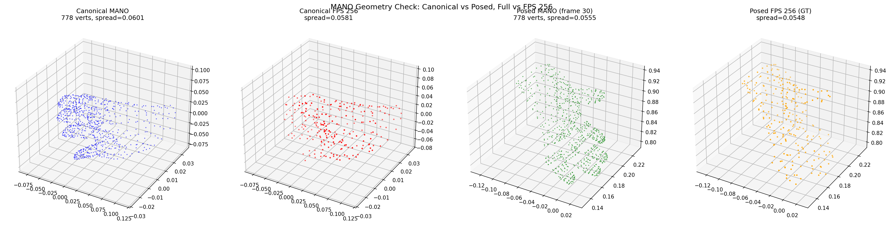
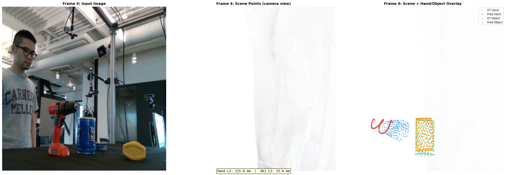

Phase 1a baseline: STream3R scene points (RGB) with hand (blue) and object (red) trajectory overlay. GT shown as circles, predictions as crosses.
Full-day session covering 9 experiments across DCF module implementation, encoding strategies, overfit validation, and generalization analysis.
Complete implementation of the Dynamic Correspondence Fields architecture, replacing the Trellis.2 Structured Latent pipeline. 14 implementation tasks, 12 commits, 62 smoke tests all passing.
| Module | File | Description |
|---|---|---|
| Data Utils | dcf_data_utils.py | DexYCB loading, MANO/object mesh canonical points, camera-space GT |
| Point Encoder | dcf_point_encoder.py | Fourier positional encoding of canonical 3D coordinates |
| Trajectory Head | dcf_trajectory_head.py | MLP: image tokens + point embeddings → per-frame 3D positions |
| Contact Head | dcf_contact_head.py | Cross-attention + MLP: hand-object contact prediction |
| Pose Readout | dcf_pose_readout.py | Kabsch/Procrustes: canonical + predicted positions → SE(3) |
| Losses | dcf_losses.py | Trajectory L1, contact BCE, pointer CE |
| DCFBranch | dcf_branch.py | Main branch module wiring all components |
| STream3R Wiring | stream3r.py, hoi_mesh_branch.py | Integration into STream3R decoder pipeline |
| Loss Wiring | losses.py | CausalLoss integration for DCF terms |
| Hydra Configs | dcf_smoke.yaml, dcf_overfit.yaml | Configuration files for experiments |
| E2E Smoke Test | test_dcf_smoke.py | End-to-end validation test |
815d285 through cdde81f (12 commits).
| Metric | Start | End | Reduction |
|---|---|---|---|
| Hand L1 | 1.258 | 0.016 | 98.7% |
Phase 1a baseline: STream3R scene points (RGB) with hand (blue) and object (red) trajectory overlay. GT shown as circles, predictions as crosses.
| Metric | Value |
|---|---|
| Hand L2 | 13.4mm |
| Object L2 | 20.4mm |
head_input_dim=1024 (extra tokens at embed_dim), not 2048 (only visual tokens get 2x concat).

Canonical vs posed MANO mesh diagnostic
GPS encoding result: hand points collapsed to single position, scene range compressed 5x
| Metric | Value | Status |
|---|---|---|
| GPS Distillation val_loss | 1978 | Poor |
| Hand Point Spread | 0.0000 | Collapsed |
| Scene World Points Range | 1.2m (was 6.6m) | 5x compression |

500-step overfit: hand and object predictions overlaid on scene points
| Metric | Start | End | Reduction |
|---|---|---|---|
| Hand L1 | 0.369 | 0.011 | 97% |
| Object L1 | 0.350 | 0.007 | 98% |
| Per-frame Hand L2 | — | 20-22mm | — |
| Per-frame Object L2 | — | 12-13mm | — |

Train frame 0: hand and object well-positioned (hand 20mm, obj 16mm)

Test frame 4 (frame 35): hand collapsed to memorized position (185mm), object still accurate (16mm)
| Split | Frame | Hand L2 (mm) | Object L2 (mm) |
|---|---|---|---|
| Train | 0 | 20 | 16 |
| Train | 5 | 20 | 16 |
| Train | 10 | 20 | 16 |
| Train | 15 | 20 | 16 |
| Test | 20 | 116 | 16 |
| Test | 25 | 190 | 16 |
| Test | 30 | 211 | 16 |
| Test | 35 | 222 | 16 |

Contact overfit frame 3 (82 contact points): hand and object trajectories with contact predictions
| Metric | Value |
|---|---|
| Hand L2 | 31-33mm |
| Object L2 | 32-34mm |
| Contact BCE | 0.247 |
| Pointer CE | 1.53 |
| Contact points per frame | 0, 23, 69, 82 |

NLF barycentric query point sampling diagnostic: surface points (blue) vs FPS vertices (red)
| Frame | Hand L2 (NLF) | Hand L2 (FPS) | Object L2 (NLF) |
|---|---|---|---|
| 0 | 7.9mm | 20mm | 8mm |
| 1 | 7.9mm | 20mm | 9mm |
| 2 | 33.6mm | 22mm | 8mm |
| 3 | 15.9mm | 20mm | 9mm |
| Step | Hand L2 (mm) | Object L2 (mm) |
|---|---|---|
| 200 | 241.5 | 124.6 |
| 600 | 228.8 | 77.6 |
| 1000 | 207.0 | 29.5 |
| 1400 | 192.7 | 52.0 |
| 2000 | 190.1 | 37.1 |
| Module | Status | Params |
|---|---|---|
| STream3R encoder (patch_embed + frame_blocks) | frozen | ~603M |
| STream3R decoder (global_blocks) | optimized | ~302M |
| Scene heads (point, camera, depth) | frozen (NO LOSS!) | ~281M |
| DCF hand point encoder (Fourier) | optimized | ~1M |
| DCF object point encoder (Fourier) | optimized | ~1M |
| DCF hand trajectory head (MLP) | optimized | ~1M |
| DCF object trajectory head (MLP) | optimized | ~1M |
| DCF contact head (cross-attn+MLP) | optimized | ~4M |
| Pose readout (Kabsch/Procrustes) | analytical | 0 |
Coordinate space: Camera space = STream3R world W (first-frame camera)
| Commit | Message | Key Files |
|---|---|---|
815d285 | chore: add DCF third-party repos to gitignore | .gitignore |
6298edb | feat(dcf): add trajectory prediction head | dcf_trajectory_head.py |
43988e6 | feat(dcf): add canonical point encoder | dcf_point_encoder.py |
4f5a340 | feat(dcf): add data utilities | dcf_data_utils.py |
04df1a0 | feat(dcf): add losses | dcf_losses.py |
c17118e | feat(dcf): add contact head | dcf_contact_head.py |
28025eb | feat(dcf): add pose readout | dcf_pose_readout.py |
8d0413a | feat(dcf): add DCFBranch | dcf_branch.py |
633f01d | feat(dcf): wire into STream3R | stream3r.py, hoi_mesh_branch.py |
b066ccb | feat(dcf): wire losses into CausalLoss | losses.py |
c250169 | test(dcf): add E2E smoke test | test_dcf_smoke.py |
cdde81f | feat(dcf): Hydra configs | dcf_smoke.yaml, dcf_overfit.yaml |
d867a68 | feat(dcf): overfit training script | dcf_overfit.py |
f87b5ab | feat(dcf): Phase 1 real DexYCB overfit | dcf_overfit.py |
39c3f04 | feat(dcf): Phase 1a coordinate-aligned overfit | dcf_stream3r_overfit_v2.py |
8ff7ff1 | feat(dcf): full STream3R pipeline overfit | dcf_stream3r_overfit.py |
46025d2 | feat(dcf): MANO GPS field encoding | mano_gps_field.py |
9109e3e | chore: gitignore GPS data files | .gitignore |
e378fb0 | feat(dcf): camera-view RGB visualization | dcf_render_camera_view.py |
8e80c21 | feat(dcf): NLF-style barycentric sampling | dcf_query_sampling.py, dcf_mano_supervision.py |
440f555 | feat(dcf): pose readout losses | dcf_pose_losses.py |
b1c6f3b | feat(dcf): generalization test script | dcf_generalization_test.py |
492d437 | feat(dcf): contact survey + 2D reproj loss | find_contact_sequences.py |
486a222 | feat(dcf): NLF query sampling overfit script | dcf_nlf_query_overfit.py |
4916cc2 | feat(dcf): full-sequence training script | dcf_full_sequence_train.py |
| Priority | Task | Details |
|---|---|---|
| P0 | Add STream3R scene losses | Root cause of scene collapse. Must add point cloud + camera + depth losses alongside DCF losses to prevent shared attention corruption. |
| P0 | Fix hand geometry collapse | Predicted hand points lose geometric structure. Possible fix: predict displacement from canonical position instead of absolute position. |
| P0 | Fix shared attention corruption | DCF tokens corrupt visual tokens through shared global attention. Options: freeze global_blocks, detach visual tokens from DCF gradient, or use separate attention streams. |
| P1 | GPS encoding fix | Reduce eigenvector dim (1024 → 128), add LayerNorm, or use exact eigenvectors at mesh vertices instead of distilled MLP. |
| P1 | Multi-sequence training | Currently single-sequence. Need dataset-level training to force image conditioning. |
| P2 | Baseline comparisons | Run HaWoR, FoundationPose on same DexYCB test sets for paper. |
| P2 | Paper writing | Method section, experiment design for NeurIPS 2026. |
Generated on 2026-04-14 · Branch: feat/dcf · 26 commits · 9 experiments